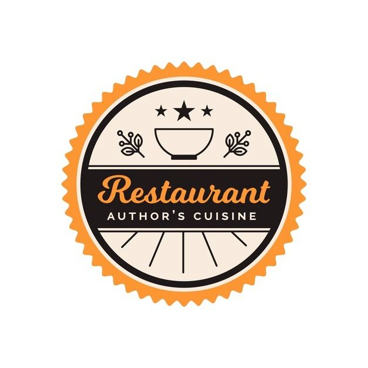

Miau Gourmet
Nota: 5.0
★★★★★
"Miau Gourmet: Nossos bolos e docinhos são obras-primas da alta confeitaria. Cada doce é cuidadosamente elaborado com ingredientes da mais alta qualidade, garantindo uma experiência gastronômica excepcional."

The Steakhouse
Nota:
★★★★★
The Steakhouse é um oásis para os amantes de carne e apreciadores de experiências culinárias memoráveis. Localizado no coração da cidade, nosso restaurante fictício oferece cortes de carne premium, preparados com maestria e grelhados na perfeição. O ambiente sofisticado e aconchegante proporciona uma atmosfera ideal para jantares especiais. Nossa carta de vinhos cuidadosamente selecionada complementa as opções de carne e torna cada refeição uma celebração da boa comida e do prazer gastronômico. O The Steakhouse é a escolha definitiva para quem busca a melhor experiência em carne.
Daily Fresh Pizza
Nota:
★★★★★
Daily Fresh Pizza é o destino perfeito para os amantes da pizza que buscam sabor e qualidade todos os dias. Nosso restaurante fictício oferece uma variedade de pizzas artesanais preparadas com ingredientes frescos e sazonais. Com opções para todos os gostos, desde clássicas até inovadoras, garantimos que cada fatia seja uma experiência deliciosa. Com um ambiente acolhedor e serviço amigável, Daily Fresh Pizza é o lugar ideal para satisfazer seus desejos de pizza em qualquer ocasião.
Nota:
★★★★★
O Seafood Restaurant é uma dark kitchen especializada em frutos do mar, exclusivamente disponível para pedidos no iFood. Nossos chefs mestres transformam ingredientes frescos do mar em pratos incríveis e saborosos. Do camarão suculento ao salmão defumado, oferecemos uma variedade de opções para atender aos gostos mais exigentes. Com entregas rápidas e serviço conveniente, satisfazemos sua paixão por frutos do mar no conforto da sua casa. Experimente o Seafood Restaurant hoje e mergulhe em um festim de sabores marinhos excepcionais.
Premium Restaurant
Nota:
★★★★★
O Premium Restaurant é o epítome da culinária sofisticada. Neste restaurante fictício, cada detalhe é meticulosamente planejado para proporcionar uma experiência gastronômica de classe mundial. Com um ambiente elegante e serviço impecável, oferecemos pratos cuidadosamente elaborados com ingredientes premium. Nossa carta de vinhos é uma seleção refinada que complementa perfeitamente as opções de pratos. O Premium Restaurant é o destino perfeito para ocasiões especiais e momentos memoráveis, onde o sabor, a arte e o luxo se encontram.

Bakery Cake
Nota:
★★★★★
Bakery Cake, a sua doçura preferida ao alcance de um clique! Explore nossa confeitaria no iFood e descubra uma deliciosa variedade de bolos, tortas, cupcakes e sobremesas feitas com amor e os melhores ingredientes. Desperte seus desejos doces e entregamos diretamente na sua porta. Satisfaça seu paladar com a Bakery Cake agora mesmo!

Italian Pizza
Nota:
★★★★★
A Pizzaria Italian Pizza é a essência da autêntica pizza italiana no coração da cidade. Nossas pizzas são preparadas com ingredientes frescos e de qualidade, criando sabores que capturam a tradição italiana. A massa é fina e crocante, e as coberturas são generosas, desde as clássicas Margheritas até combinações criativas. Nosso ambiente é acolhedor, perfeito para jantares em família ou encontros românticos. Experimente a verdadeira paixão pela pizza na Italian Pizza.

MRK Coffee Shop
Nota:
★★★★★
A cafeteria MRK Coffee Shop é o refúgio perfeito para os amantes de café. Oferecemos uma ampla variedade de grãos premium de todo o mundo, cuidadosamente torrados e moídos na hora para garantir uma xícara de café excepcional. Nosso espaço acolhedor é ideal para reuniões, leitura ou simplesmente relaxar com uma bebida quente. Além de café, oferecemos uma seleção de deliciosos bolos, sanduíches e petiscos para acompanhar sua paixão pela cafeína. Venha desfrutar de uma experiência de café de alta qualidade no MRK Coffee Shop.

O Sushi
Nota:
★★★★★
O Restaurante Sushi é um templo da culinária japonesa, onde a arte e sabor se unem. Nossa equipe de chefs habilidosos prepara sushi e sashimi com peixes frescos e ingredientes da mais alta qualidade. Com um ambiente moderno e aconchegante, nosso restaurante é ideal para refeições tranquilas ou encontros sociais. Oferecemos uma ampla variedade de opções, desde clássicos tradicionais até criações exclusivas. Explore o mundo do sushi no Restaurante Sushi e experimente a excelência da culinária japonesa.
